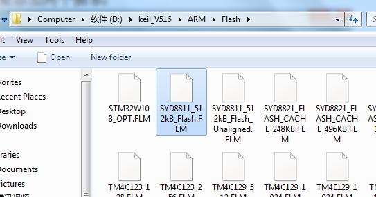

本程序版权属于成都盛芯微科技SYDTEK，更多内容请看官网：http://www.sydtek.com/
本工具《SYDTEK_Studio.exe》主要用途是下载烧录成都盛芯微科技SYDTEK旗下所有芯片以及设置一些配置。
烧录SYD8801的步骤请看本工具目录下的《\Documentation\SYD8801固件烧录方法.pdf》
烧录SYD8821的步骤请看本工具目录下的《\Documentation\SYD8821固件烧录方法.pdf》
烧录SYD8811的步骤请看本工具目录下的《\Documentation\SYD8811固件烧录方法.pdf》
这里以SYD8811为例大体说明怎么配合KEIL进行软件开发调试，开发板实物如下：
A.在拿到新的芯片或者开放那的时候首先使用jlink连接按照《SYDTEK Studio》工具目录下的"SYDTEK Studio release\Documentation\SYD8811固件烧录方法.pdf"文件烧录“4k_setting"文件（如果没有特定要求可以烧录《SYDTEK Studio》目录下存放的相应文件，比如"SYDTEK Studio release\SYD8811_4ksetting_10pf_LPO32K_2000PPM20190530.bin"）：
B.接下来烧录”ble_service"文件（该文件存放在KEIL工程的“profile”文件夹下，比如"SYD8811_SDK\Source Code\SYD8811_ble_peripheral\3.SYD8811_BLE_UART_EVBOLED_notifyen_open_power\profile\SYD_ble_service_Flash.txt"）：
C.在烧录完“4k_setting"和”ble_service"后既可以在tool中直接烧录KEIL工程编译出来的bin或者hex档案（比如"SYD8811_SDK\SourceCode\SYD8811_ble_peripheral\3.SYD8811_BLE_UART_EVBOLED_notifyen_open_power\Keil\output\Ble_Vendor_Service.bin"）
，也可以直接打开keil工程编译后下载：
D.拷贝SYDTEK提供的官方插件（存放在“SYD8811_SDK\Documentation”文件夹下）复制到KEIL的flash目录：

D.在KEIL的设置中引用这个插件：
烧录外部flash：
使用SWD烧录外部flash时只要切换到“UART”选择卡点击“Open”按钮再点击“Write”按钮即可。如果是使用UART进行烧录那么这里必须要按照正常的烧录方式先烧录本工具目录下的《SYDXXXX_BootLoader_hci_uart.bin》，比如对于SYD8821的平台那么这里要提前烧录的软件就是本工具目录下的《SYD8821_Cache_BootLoader_hci_uart.bin》.烧录成功后复位芯片，点击“close”再点击“open”按钮进入带有烧录外部flash的BootLoader模式，然后点击按照SWD的方式烧录外部FLASH!
成都盛芯微科技有限公司（SYDTEK）前身成立于2012年，由具有丰富无线通信芯片设计经验的海归团队组建而成，团队成员主要来自清华大学、电子科技大学等学府，专注于超低功耗物联网BLE和智能无线音频芯片设计、开发和销售。产品包括：SYD88XX系列超低功耗物联网BLE蓝牙芯片、SYD66XX系列智能无线音频芯片。
成都盛芯微（SYDTEK）在成都、台湾新竹设有研发中心，在深圳设有技术支持和销售中心。公司与产业链上下游企业有紧密协作和技术沟通，在设计、生产和市场方面拥有丰富的经验。经过多年发展，成都盛芯微（SYDTEK）已经在超低功耗物联网芯片领域有深厚的技术积累，开发出了全球一流低功耗高性能BLE物联网芯片，以及全球第一颗集成心率传感器的超低功耗BLE芯片，为中国芯添砖加瓦。
成都盛芯微科技有限公司致力于成为超低功耗物联网蓝牙和智能无线音频芯片的领导者。

SYDTEK - Sail Your Dreams